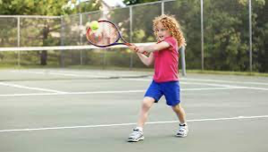
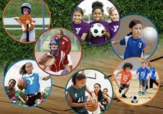
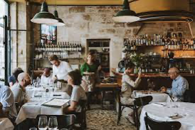
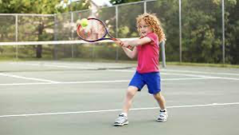
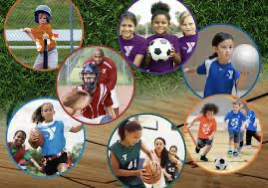
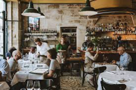

Tom’s Day
Every day, Tom gets up at 8 o'clock in the morning. Then he reads his newspaper in the kitchen. He has
breakfast at 11:30am and then he telephones his mother in Scotland.
In the afternoon, at 1pm, Tom plays tennis with his sister. After that, they eat dinner in a restaurant
together. At 6pm, Tom swims for one hour and then he goes by bike to his brother´s house. They talk and
listen to music.
Tom watches television in the evening and drinks a glass of warm milk before he goes to bed at 11:30pm. Learning Point:
Please pay attention to the above phrases in yellow . play tennis: you can use PLAY for team sports or sports played with a ball, such as football; baseball; basketball; tennis; soccer
 
. restaurant: a place where people pay to sit and eat meals that are cooked and served.

Tom watches television in the evening and drinks a glass of warm milk before he goes to bed at 11:30pm. Learning Point:
Please pay attention to the above phrases in yellow . play tennis: you can use PLAY for team sports or sports played with a ball, such as football; baseball; basketball; tennis; soccer
 
. restaurant: a place where people pay to sit and eat meals that are cooked and served.
